건축산업기사 (2015-08-16 기출문제)
1과목: 건축계획
1. 연면적 200m2을 초과하는 공동주택에 설치하는 복도의 유효너비는 최소 얼마 이상으로 하여야 하는가? (단, 양옆에 거실이 있는 복도의 경우)
- 0.9m
- 1.2m
- 1.8m
- 2.1m
(정답률: 57%)

2. 학교운영방식 중 종합교실형에 관한 설명으로 옳은 것은?
- 초등학교 저학년에 적당한 형이다.
- 각 교과에 순수율이 높은 교실이 주어진다.
- 모든 교실이 특정 교과를 위해 만들어진다.
- 학생의 이동이 많고 이동시 혼란의 발생 소지가 많다.
(정답률: 87%)
3. 다음 중 고층 사무소 건축의 기둥간격 결정요인과 가장 거리가 먼 것은?
- 코어의 형식
- 책상의 배치단위
- 구조상의 스팬의 한도
- 지하주차장의 주차배치단위
(정답률: 57%)
4. 다음 설명에 알맞은 부엌의 평면형은?
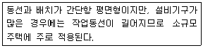
- ㄱ자형
- ㄷ자형
- 병렬형
- 일렬형
(정답률: 80%)
5. 주택의 평면계획에 관한 설명으로 옳지 않은 것은?
- 거실이 통로가 되지 않도록 평면계획시 고려해야 한다.
- 현관의 위치는 도로와의 관계, 대지의 형태 등에 영향을 받는다.
- 부엌은 가사노동의 경감을 위해 작업삼각형(work triangle)의 변의 길이를 가급적 길게 한다.
- 부부침실보다는 낮에 많이 사용되는 노인실이나 아동실이 우선적으로 좋은 위치를 차지하는 것이 바람직하다.
(정답률: 83%)
6. 다음 중 근린분구의 중심시설에 속하지 않는 것은?
- 약국
- 유치원
- 파출소
- 초등학교
(정답률: 76%)
7. 사무소 건축의 코어 플랜에서 각 공간의 위치관계에 관한 설명으로 옳지 않은 것은?
- 엘리베이터는 가급적 중앙에 집중 배치할 것
- 계단과 엘리베이터는 가능한 한 접근시킬 것
- 코어 내의 각 공간이 각층마다 공통의 위치에 있을 것
- 화장실을 그 위치가 외래자에게 잘 알려질 수 없는 곳에 배치할 것
(정답률: 82%)
8. 학교건축에서 변화에 유연하게 대응하기 위한 방법으로 적절한 것은?
- 특별교실의 분산배치
- 다목적성을 가진 오픈 플랜
- 안전을 고려한 습식구조 벽체
- 교과별 특별교실의 적극도입
(정답률: 77%)
9. 아파트의 단위주거 단면구성형식 중 메조넷형에 관한 설명으로 옳은 것은?
- 소규모 주택에서의 활용이 유리하다.
- 통로면적의 감소로 전용면적이 증가된다.
- 엘리베이터가 매층 정지하여 이용이 편리하다.
- 부지의 이용률은 좋으나 통로가 없는 층에서는 채광, 통풍을 좋게 할 수 없다.
(정답률: 65%)
10. 다음은 엘리베이터 설치 수량 산정과 관련된 내용이다. ( )안에 공통으로 들어갈 수치는?
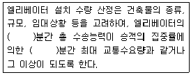
- 5
- 10
- 20
- 30
(정답률: 70%)
11. 주택에서 공간 사이의 경계에 높이 차를 두어야 할 필요가 가장 적은 곳은?
- 현관과 거실
- 거실과 식당
- 화장실과 거실
- 거실과 거실앞의 테라스
(정답률: 75%)
12. 사무소 건축의 코어 형식 중 중심코어형에 관한 설명으로 옳은 것은?
- 내진 구조를 위한 코어로서는 불리하다.
- 바닥면적이 큰 경우에는 적용이 곤란하다.
- 내부공간과 외관이 획일적으로 되기 쉽다.
- 2방향 피난에 이상적이며, 방재상 유리하다.
(정답률: 76%)
13. 학교건축에서 다층교사에 관한 설명으로 옳지 않은 것은?
- 집약적인 평면계획이 가능하다.
- 학년별 배치, 동선 등에 신중한 계획이 요구된다.
- 시설의 집중화로 효율적인 공간 이용이 가능하다.
- 구조계획이 단순하며, 내진 및 내풍 구조가 용이하다.
(정답률: 75%)
14. 상점계획에 관한 설명으로 옳지 않은 것은?
- 점내 고객의 동선은 길게 처리하는 것이 좋다.
- 조명 방법은 국부조명과 전체조명을 병행해서 사용한다.
- 고객의 동선과 종업원의 동선이 만나는 곳에 카운터케이스를 놓는다.
- 슈퍼마켓의 매장 바닥은 고저차를 두는 것이 변화가 있어 효과적이다.
(정답률: 77%)
15. 아파트 형식 중 홀(hall)형에 관한 설명으로 옳은 것은?
- 독선자 아파트에 주로 사용된다.
- 복도형에 비해 통행부 면적이 크다.
- 기계적 환경조절이 반드시 필요하다.
- 복도형에 비해 프라이버시가 양호하다.
(정답률: 70%)
16. 상점의 정면(facade)구성에 요구되는 5가지 광고요소(AIDMA 법칙)에 속하지 않는 것은?
- 흥미(Intrest)
- 주의(Attention)
- 기억(Memory)
- 장식(Decoration)
(정답률: 81%)
17. 모듈계획(MC : Modular Coordination)에 관한 설명으로 옳지 않은 것은?
- 건축재료의 취급 및 수송이 용이해진다.
- 건물 외관의 자유로운 구성이 용이하다.
- 현장 작업이 단순해지고 공기를 단축시킬 수 있다.
- 건축재료의 대량 생산이 용이하여 생산 비용을 낮출 수 있다.
(정답률: 81%)
18. 공장 건축에서 톱날 지붕을 사용하는 가장 주된 이유는?
- 소음 방지
- 습도 조절
- 내진성 확보
- 균일한 실내조도
(정답률: 79%)
19. 사무소 건축에서 렌터블비(rentable ratio)가 의미하는 것은?
- 연면적과 대지면적의 비
- 임대면적과 연면적의 비
- 임대면적과 대지면적의 비
- 임대면적과 건축면적의 비
(정답률: 74%)
20. 상점 쇼윈도우(show window)의 형식에 관한 설명으로 옳지 않은 것은?
- 평형은 출입구를 가려서 보안성이 확보된다.
- 만입형은 점내에 들어가지 않고도 품목을 알 수 있다.
- 다층형은 큰 도로나 광장에 면한 경우 효과적이다.
- 홀형은 만입부를 상점 내로 더 깊게 끌어들인다.
(정답률: 67%)
2과목: 건축시공
21. 굳지 않은 콘크리트의 측압에 관한 설명으로 옳은 것은?
- 온도가 높을수록 측압은 크다.
- 슬럼프가 클수록 측압은 작다.
- 거푸집 널의 수밀성이 높을수록 측압은 작다.
- 콘크리트의 타설 속도가 빠를수록 측압은 크다.
(정답률: 57%)
22. 철근공사에 관한 설명으로 옳지 않은 것은?
- 한번 구부린 철근은 다시 펴서 사용해서는 안 된다.
- 철근은 상온에서 냉간가공하는 것이 원칙이다.
- 철근에 반드시 녹막이 칠을 한다.
- 스터럽 및 띠철근의 단부에는 표준갈고리를 만들어야 한다.
(정답률: 72%)
23. 세로 규준틀을 가장 많이 사용하는 공사는?
- 토공사
- 조적공사
- 철근콘크리트공사
- 철골공사
(정답률: 72%)
24. 건축물의 지하실 방수공법에서 안방수와 비교한 바깥방수의 특징이 아닌 것은?
- 수압이 크고 깊은 지하싱에 유리하다.
- 공사기일에 제약을 받는다.
- 시공이 간편하고 결함의 발견 및 보수가 용이하다.
- 일반적으로 보통 시트방수나 아스팔트 방수가 많이 쓰인다.
(정답률: 62%)
25. 연약점토질 지반의 점착력을 측정하기 위한 가장 적합한 토질시험은?
- 전기적탐사
- 표준관입시험
- 베인테스트
- 삼축압축시험
(정답률: 80%)
26. 시멘트 10ton을 사용하여 1:2:4의 콘크리트로 배합할 때 개략적인 콘크리트량으로 옳은 것은?
- 21.25m3
- 31.25m3
- 41.25m3
- 51.25m3
(정답률: 46%)
27. 건설 계약제도에서 입찰순서로서 옳은 것은?
- 현장설명→입찰→입찰공고→개찰→낙찰→계약체결
- 입찰공고→현장설명→입찰→개찰→낙찰→계약체결
- 입찰공고→현장설명→입찰→낙찰→개찰→계약체결
- 현장설명→입찰공고→입찰→낙찰→개찰→계약체결
(정답률: 71%)
28. 철근의 이음에 관한 설명으로 옳지 않은 것은?(오류 신고가 접수된 문제입니다. 반드시 정답과 해설을 확인하시기 바랍니다.)
- 인장응력이 최대로 작용하는 곳에서는 이음을 하지 않는다.
- 서로 다른 굵기의 철근을 겹침이음하는 경우 굵기가 작은 철근기준으로 한다.
- 동일한 개소에 철근 수의 반 이상을 이어서는 안된다.
- 주근의 이음은 구조부재에 있어 인장력이 가장 적은 부분에 둔다.
(정답률: 57%)
29. 조적벽체에 발생하는 균열을 대비하기 위한 산축줄눈의 설치 위치로 옳지 않은 것은?
- 벽높이가 변하는 곳
- 벽두께가 변하는 곳
- 집중응력이 작용하는 곳
- 창 및 출입구 등 개구부의 양측
(정답률: 60%)
30. 실리카 흄 시멘트(silica fume cement)의 특징으로 옳지 않은 것은?
- 초기강도는 크나, 장기강도는 감소한다.
- 화학적 저항성 증진효과가 있다.
- 시공연도 개선효과가 있다.
- 재료분리 및 블리딩이 감소된다.
(정답률: 74%)
31. 건설공사에서 도급계약 서류에 포함되어야 할 서류가 아닌 것은?
- 공사계약서
- 시방서
- 설계도
- 실행내역서
(정답률: 55%)
32. 방사선 차폐를 목적으로 금속물질이 포함된 중정적 등의 골재를 넣은 콘크리트는?
- 중량 콘크리트
- 매스 콘크리트
- 팽창 콘크리트
- 수밀 콘크리트
(정답률: 60%)
33. 콘크리트 봉형진동기 사용에 대한 설명으로 옳은 것은?
- 진동시간은 콘크리트 표면에 페이스트가 얇게 떠오를 정도로 한다.
- 진동기 삽입간격은 진동시간을 고려하여 약 100cm 이상으로 한다.
- 진동기의 선단은 철골, 철근에 닿도록 한다.
- 진동기는 콘크리트를 부어넣는 층의 바닥까지 경사지게 삽입한다.
(정답률: 53%)
34. 계약제도에서 입찰방식이 아닌 것은?
- 공개경쟁입찰
- 계약경쟁입찰
- 제한경쟁입찰
- 지명경쟁입찰
(정답률: 63%)
35. 수성페인트에 합성수지와 유화제를 섞은 것으로 목재나 종이에 부착력이 좋은 도료는?
- 유성페인트
- 바니시
- 에멀션페인트
- 래커
(정답률: 47%)
36. 단순조적 블록 공사에 관한 설명으로 옳지 않은 것은?
- 벽의 모서리, 중간요소, 기타 기준이 되는 부분을 먼저 정확하게 쌓는다.
- 살 두께가 큰 편을 아래로 하여 쌓는다.
- 줄눈 모르타르는 쌓은 후 줄눈누르기 및 줄눈파기를 한다.
- 줄눈 두께는 10mm가 되게 한다.
(정답률: 66%)
37. 지반조사의 방법에서 보링의 종류가 아닌 것은?
- 탐사식 보링
- 충격식 보링
- 회전식 보링
- 수세식 보링
(정답률: 48%)
38. 서중 콘크리트의 일반적인 문제점에 관한 설명으로 옳지 않은 것은?
- 슬럼프 저하 등의 워커빌리티 변화가 생기기 쉽다.
- 동일 슬럼프를 얻기 위한 단위수량이 많다.
- 콜드조인트가 발생하기 쉽다.
- 초기강도의 발현이 낮다.
(정답률: 58%)
39. 유동화콘크리트의 베이스 콘크리트에 대한 설명으로 옳은 것은?
- 유동화 콘크리트를 제조하기 위하여 혼합된 유동화제를 첨가하기 전의 콘크리트
- 유동화 콘크리트를 제조하기 위하여 혼합된 유동화제를 첨가한 후의 콘크리트
- 기초 콘크리트에 타설하기 위하여 현장에 반입된 레디믹스트 콘크리트
- 지하층에 콘크리트를 타설하기 위하여 현장에 반입된 레디믹스트 콘크리트
(정답률: 62%)
40. 공동도급(Joint Venture)에 관한 설명으로 옳지 않은 것은?
- 복수의 참가자가 독립의 공동체를 구성한다.
- 참가자는 출자와 관리를 공동으로 한다.
- 특정한 공사를 목적으로 한다.
- 실행예산 제도의 일종이다.
(정답률: 56%)
3과목: 건축구조
41. 철근콘크리트 구조에서 다음의 고전을 갖는 대칭 T형보의 유효폭은?
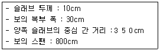
- 190cm
- 200cm
- 275cm
- 350cm
(정답률: 46%)
42. 그림과 같은 정방형 단주(短柱)의 E점에 압축력 100kN이 작용할 때 B점에 발생되는 응력의 크기는?
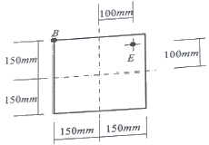
- -1.11 MPa
- 1.11 MPa
- -2.22 MPa
- 2.22 MPa
(정답률: 44%)
43. 다음 중 기초의 지정형식상 분류에 속하는 것은?
- 독립기초
- 연속기초
- 피어기초
- 온통기초
(정답률: 59%)
44. 부재의 단부에 표준갈고리가 있는 인장 이형철근의 기본정착길이는 약 얼마인가?(단, fck=24MPa, fy=400MPa, D25 철근의 공칭지름=25.4mm, 철근도막계수=1, 경량콘크리트계수=1)
- 480.5mm
- 497.7mm
- 512.8mm
- 518.5mm
(정답률: 55%)
45. 그림과 같은 트러스에서 AC의 부재력은?
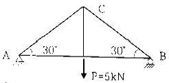
- 5kN(인장)
- 5kN(압축)
- 10kN(인장)
- 10kN(압축)
(정답률: 49%)
46. 건축물의 평면구조형식과 구조 종별에 대한 관계를 나타낸 것으로 옳은 것은?
- 트러스 구조는 현장타설 철근콘크리트구조와 목구조로 건축할 수 있다.
- 튜브구조는 현장타설 철근콘크리트 구조와 철골구조로 건축할 수 있다.
- 절판구조는 철큰콘크리트 구조로만 건축할 수 있다.
- 스페이스 프레임 구조는 현장타설 철근콘크리트 구조로 건축할 수 있다.
(정답률: 52%)
47. 무근 콘크리트 기중이 축방향력을 받아 재축방향으로 0.5mm 변형하였다. 좌굴을 고려하지 않을 경우 축방향력은? (단, 단면 400mm×400mm, 길이 4m, 콘크리트 탄성계수는 2.1×104MPa임)
- 300 kN
- 360 kN
- 420 kN
- 480 kN
(정답률: 50%)
48. 그림과 같이 등분포하중을 받는 단순보에서 최대 휨응력도는 얼마인가? (단, 자중은 무시)
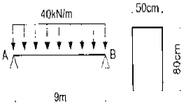
- 7,593.8 kPa
- 8,597.5 kPa
- 9,427.6 kPa
- 10,250.4 kPa
(정답률: 41%)
49. 철근 콘크리트 보에서 단부에 늑근을 많이 배근하는 이유는?
- 철근과 콘크리트의 부착력을 증가시키기 위하여
- 보에 일어나느 휨모멘트에 저항하기 위하여
- 콘크리트의 강도를 높이기 위하여
- 보에 일어나는 전단력에 저항하기 위하여
(정답률: 55%)
50. 철근콘크리트 구조물에서 벽체의 전체 단면적에 대한 최소 수직 및 수평철근비 기준에 관한 내용으로 틀린 것은?
- 최소수직철근비(지금 16mm 이하의 용접철망) : 0.0012
- 최소수직철근비(설계기준항복강도 400MPa 이상으로서 D16 이하의 이형철근) : 0.0012
- 최소수평철근비(설계기준항복강도 400MPa 이상으로서 D16 이하의 이형철근) : 0.0015
- 최소수평철근비(지름 16mm 이하의 용접철망) : 0.0020
(정답률: 53%)
51. 다음 그림과 같은 내민보에서 C점의 휨모멘트 크기는?
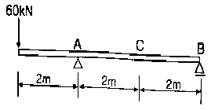
- -90kN·m
- -80kN·m
- -70kN·m
- -60kN·m
(정답률: 50%)
52. 축방향력을 받는 350×450mm 인 기둥을 설계하고자 한다. 주근은 D16, 띠철근은 D10을 사용하고자 할 때 띠철근의 간격은? (단, D16의 공칭지름 15.9mm, D10의 공칭지름 9.5mm)
- 254 mm
- 312 mm
- 358 mm
- 445 mm
(정답률: 35%)
53. 그림과 같이 색칠된 BOX형 단면의 X축에 대한 단면2차모멘트는? (단, 단면의 두께 t는 2cm로 4변 모두 일정하다.)
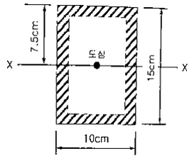
- 2,095cm4
- 2,147cm4
- 2,264cm4
- 2,336cm4
(정답률: 48%)
54. 기성콘크리트 말뚝을 타설할 때 최소 중심간격은 얼마 이상으로 하여야 하는가?
- 450mm
- 600mm
- 750mm
- 900mm
(정답률: 62%)
55. 그림과 같이 집중하중을 받는 단순보형 아치에 발생하는 최대 휨모멘트는 얼마인가?
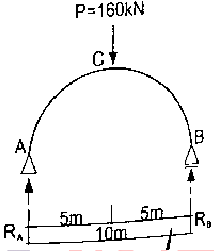
- 100 kN·m
- 200 kN·m
- 300 kN·m
- 400 kN·m
(정답률: 47%)
56. 콘크리트보의 처짐에 영향을 미치는 요소로 가장 거리가 먼 것은?
- 압축철근
- 콘크리트 크리프
- 지속하중
- 늑근
(정답률: 52%)
57. 철근콘크리트 구조물에서 철근의 최소피복두께를 규정하는 이유로 가장 거리가 먼 것은?
- 콘크리트의 압축응력 증대
- 철근의 부식방지
- 철근의 내화
- 철근의 부착
(정답률: 53%)
58. 그림과 같은 구조물의 개략적인 휨모멘트로 옳은 것은?
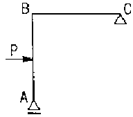
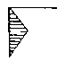
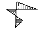
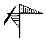
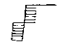
(정답률: 46%)
59. 다음과 같은 단면에서 X-X축으로부터의 도심의 위치를 구하면?
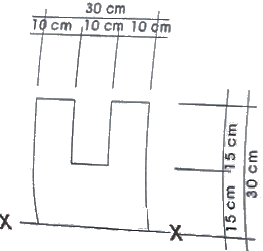
- 13.0 cm
- 13.5 cm
- 14.0 cm
- 14.5 cm
(정답률: 50%)
60. 구조설계 단계에서의 구조계획 과정 중 틀린 것은?
- 건축물의 용도, 사용재료 및 강도, 기반특성, 하중조건 등을 고려한다.
- 기둥과 보의 배치는 기둥간격 및 층고, 설비계획도 함께 고려한다.
- 지진하중이나 풍하중 등 수평하중에 저항하는 구조요소는 입면상 균형을 배제하고 평면균형을 고려한다.
- 구조형식이나 구조재료를 혼용할 때는 강성이나 내력의 연속성뿐만 아니라 사용성에 영향을 미치는 진동에도 미리 대비한다.
(정답률: 66%)
4과목: 건축설비
61. 증기난방 설비에서 스팀헤더(steam header)를 사용하는 주된 이유는?
- 응축수를 배출하기 위해서
- 증기의 압력을 보충하기 위해서
- 각 계통으로 분류 송기하기 위해서
- 관의 신축조절을 용이하도록 하기 위해서
(정답률: 46%)
62. 방열기 입구의 온수 온도가 85이고 출구 온도가 80일 때 온수의 순환량은? (단, 방열기의 방열량은 5000W, 물의 비열은 4.2kJ/kg·K 이다.)
- 857.1kg/h
- 914.2kg/h
- 957.4kg/h
- 998.5kg/h
(정답률: 30%)
63. 간접조명에 관한 설명으로 옳지 않은 것은?
- 강한 음영이 없고 부드럽다.
- 실내 반사율의 영향이 크다.
- 경제성보다 분위기를 중요시하는 장소에 적합하다.
- 조도가 균일하지 않지만 국부적으로 높은 조도를 얻기 쉽다.
(정답률: 64%)
64. 옥내소화전설비에 관한 설명으로 옳지 않은 것은?
- 송수구는 구경 65mm의 쌍구형 또는 단구형으로 한다.
- 송수구는 소방차가 쉽게 접근할 수 있는 잘 보이는 장소에 설치한다.
- 각 소화전의 노즐선단에서의 방수량은 1분당 50L 이상이 되도록 한다.
- 건축물의 각 층에 옥내소화전이 2개씩 설치될 경우 저수량은 최소 5.2m3 이상이 되도록 한다.
(정답률: 65%)
65. 통기관을 설치하는 목적과 가장 거리가 먼 것은?
- 수격작용의 방지
- 배수관 내의 흐름 원활
- 배수관 내의 환기와 청결 유지
- 사이펀 작용 및 배압으로부터 트랩 내 봉수 보호
(정답률: 49%)
66. 피뢰시스템의 수뢰부에 사용되지 않는 것은?
- 돌침
- 인사도선
- 메시도체
- 수평도체
(정답률: 53%)
67. 다음의 난방방식 중 예열시간이 짧아 간헐적으로 이용되는 실에 가장 적합한 난방방식은?
- 온수난방
- 증기난방
- 복사난방
- 고온수난방
(정답률: 70%)
68. 펌프의 전양정이 100m, 양수량이 12m3/h 일 때, 펌프의 축동력은? (단, 펌프의 효율은 60% 이다.)
- 약 3.5kW
- 약 4.0kW
- 약 4.5kW
- 약 5.5kW
(정답률: 40%)
69. 최고층에 설치된 플러시 밸브의 최소필요압력이 70kPa인 경우, 밸브로부터 고가수조의 최저수면까지의 연직거리는 최소 얼마 이상 확보하야여 하는가? (단, 고가수조로부터 기구까지 발생되는 마찰손실수두는 1m로 한다.)
- 5m
- 6m
- 7m
- 8m
(정답률: 48%)
70. 10의 물 100L를 50까지 가열하는데 필요한 열량은? (단, 물의 비열은 4.2kJ/kg·K 이다.)
- 4000kJ
- 8400kJ
- 16800kJ
- 20800kJ
(정답률: 62%)
71. 인터폰설비의 통화망 구성 방식에 속하지 않는 것은?
- 모자식
- 연결식
- 상호식
- 복합식
(정답률: 57%)
72. 빙축열 시스템에 관한 설명으로 옳지 않은 것은?
- 저온용 냉동기가 필요하다.
- 얼음을 축열 매체로 사용하여 냉열을 얻는다.
- 주간의 피크부하에 해당하는 전력을 사용한다.
- 응고 및 융해열을 이용하므로 저장열량이 크다.
(정답률: 63%)
73. 다음과 같은 조건에 있는 크기가 가로 10m, 세로 7m, 높이 3m인 교실에서 환기를 시간당 2회로 행할 때 환기로 인한 손실 현열량은?
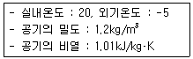
- 2.0kW
- 2.5kW
- 3.0kW
- 3.5kW
(정답률: 28%)
74. 어떤 방의 전열에 의한 손실열량이 3000W, 환기에 의한 손실열량이 1500W일 때, 이 방에 설치하는 온수 방열기의 상당방열면적은? (단, 표준상태이며, 표준방열량은 523W/m2 이다.)
- 4.3m2
- 5.2m2
- 8.6m2
- 10.4m2
(정답률: 53%)
75. 다음 그림에서 트랩의 봉수 깊이를 올바르게 나타낸 것은?
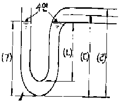
- (ㄱ)
- (ㄴ)
- (ㄷ)
- (ㄹ)
(정답률: 65%)
76. 다음의 공기조화방식 중 전공기방식에 속하지 않는 것은?
- 단일덕트방식
- 2중덕트방식
- 팬코일유닛방식
- 멀티존유닛방식
(정답률: 74%)
77. 일반적으로 지름이 큰 대형관에서 배관 조립이나 관의 교체를 손쉽게 할 목적으로 이용되는 이음방식은?
- 신축 이음
- 용접 이음
- 나사 이음
- 플랜지 이음
(정답률: 71%)
78. 앵글 밸브(angle valve)에 관한 설명으로 옳지 않은 것은?
- 유량조절이 가능하다.
- 옥내소화전의 개폐밸브로 이용된다.
- 게이트 밸브(gate valve)의 일종이다.
- 유체의 흐름을 직각으로 바꿀 때 사용된다.
(정답률: 54%)
79. 급수배관에 공기실을 설치하는 가장 주된 이유는?
- 통기를 위하여
- 수격작용을 방지하기 위하여
- 배관구배를 유지하기 위하여
- 배관내 이물질을 제거하기 위하여
(정답률: 63%)
80. 형광램프에 관한 설명으로 옳지 않은 것은?
- 점등장치를 필요로 한다.
- 백열전구에 비해 수명이 길다.
- 옥내외 전반조명, 국부조명에 사용된다.
- 빛의 어른거림이 없으며 열발산이 백열전구보다 많다.
(정답률: 65%)
5과목: 건축관계법규
81. 6층 이상의 거실면적의 합계가 6000m2인 경우, 다음 중 설치하여야 하는 승용승강기의 최소 대수가 가장 적은 건축물의 용도는? (단, 8인승 승용승강기의 경우)
- 의료시설
- 숙박시설
- 위락시설
- 교육연구시설
(정답률: 56%)
82. 공동주택과 위락시설을 같은 초고증 건축물에 설치하는 경우, 공동주택의 출입구와 위락시설의 출입구는 서로 그 보행거리가 최소 얼마 이상 되도록 하여야 하는가?
- 10m
- 20m
- 30m
- 40m
(정답률: 70%)
83. 건축법상 다음과 같이 정의되는 용어는?
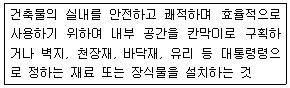
- 리모델링
- 실내건축
- 실내장식
- 실내디자인
(정답률: 67%)
84. 다음 중 건축법상 건축주에 속하지 않는 것은?
- 건축물의 이전에 관한 공사를 발주하는 자
- 공작물의 축조에 관한 공사를 현장 관리인을 두어 스스로 하는 자
- 건축설비의 설치에 관한 공사를 현장 관리인을 두어 스스로 하는 자
- 자기의 책임으로 건축물이 설계도서의 내용대로 시공되는지를 확인하는 자
(정답률: 65%)
85. 다중주택이 갖추어야 할 요건에 속하는 것은?
- 19세대 이하가 거주할 수 있을 것
- 주택으로 쓰는 층수가 5개 층 이하일 것
- 1개 등의 주택으로 쓰이는 바닥면적의 합계가 660m2 이하일 것
- 학생 또는 직장인 등 여러 사람이 장기간 거주할 수 있는 구조로 되어 있을 것
(정답률: 49%)
86. 피뢰설비를 설치하여야 하는 건축물의 높이 기준은?
- 15m 이상
- 20m 이상
- 31m 이상
- 41m 이상
(정답률: 74%)
87. 허가권자가 가로구역을 단위로 하여 건축물의 최고 높이를 지정·공고 할 때 고려하여야 하는 사항에 속하지 않는 것은?
- 도시미관 및 경관계획
- 해당 가로구역이 접하는 도로의 너비
- 해당 가로구역을 통과하는 모든 차량의 통행량
- 해당 가로구역의 상·하수도 등 간선시설의 수용능력
(정답률: 63%)
88. 막다른 도로의 길이가 32m인 경우, 건축법령상 도로이기 위한 최소한의 도로의 너비는 얼마인가?
- 2m
- 3m
- 4m
- 6m
(정답률: 52%)
89. 건축물의 바깥쪽에 설치하는 피난계단의 구조에 관한 기준 내용으로 옳지 않은 것은?
- 계단의 유효너비는 0.9m 이상으로 할 것
- 계단실에는 예비전원에 의한 조명설비를 할 것
- 계단은 내화구조로 하고 지상까지 직접 연결되도록 할 것
- 건축물의 내부에서 계단으로 통하는 출입구에는 갑종방화문을 설치할 것
(정답률: 41%)
90. 건축허가신청에 필요한 설계도서에 속하지 않는 것은?
- 동선도
- 건축계획서
- 실내마감도
- 토지굴착 및 옹벽도
(정답률: 50%)
91. 건축법령상 리모델링이 쉬운 구조에 관한 기준내용으로 옳지 않은 것은?(단, 공동주택의 경우)
- 구조체에서 건축설비, 내부 마감재료 및 외부 마감재료를 분리할 수 있을 것
- 내력벽을 증설 또는 해제하거나 그 벽면적을 30m2 이상 변경할 수 있을 것
- 개별 세대 안에서 구획된 실의 크기, 개수 또는 위치 등을 변경할 수 있을 것
- 각 세대는 인접한 세대와 수직 또는 수평 방향으로 통합하거나 분할할 수 있을 것
(정답률: 49%)
92. 부설주차장의 설치대상 시설물의 종류에 따른 설치기준이 옳지 않은 것은?
- 골프장 : 1홀당 10대
- 판매시설 : 시설면적 100m2당 1대
- 문화 및 집회시설 중 관람장 : 정원 100명당 1대
- 방송통신시설 중 방송국 : 시설면적 150m2당 1대
(정답률: 64%)
93. 다중이용 건축물에 속하지 않는 것은?(단, 해당 용도로 쓰는 바닥면적의 합계가 5000m2이며, 층수가 10층인 건축물의 경우)
- 종교시설
- 판매시설
- 의료시설 중 종합병원
- 숙박시설 중 일반숙박시설
(정답률: 56%)
94. 다음은 건축물의 층수 산정 방법에 관한 기준 내용이다. ( )안에 알맞은 것은?
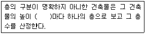
- 2m
- 3m
- 4m
- 5m
(정답률: 75%)
95. 다음 중 기계식 주차장에 속하지 않는 것은?
- 지평식
- 지하식
- 건축물식
- 공작물식
(정답률: 72%)
96. 택지개발사업 등 단지조성사업 등으로 설치되는 노외주차장에는 경형자동차를 위한 전용주차구획을 노외주차장 총주차대수의 얼마 이상 설치하여야 하는가?(2022년 02월 14일 확인된 규정으로 정답 변경되었습니다. 참고하세요.)
- 3%
- 5%
- 10%
- 15%
(정답률: 41%)
97. 공작물을 축조할 때 특별자치시장·특별자치도지사 또는 시장·군수·구청장에게 신고를 하여야 하는 대상 공작물에 속하지 않는 것은?(단, 건축물과 분리하여 축조하는 경우)
- 높이가 3m인 담장
- 높이가 5m인 굴뚝
- 높이가 5m인 광고탑
- 바닥면적인 40m2인 지하대피호
(정답률: 63%)
98. 다음은 주차전용건축물에 관한 기준 내용이다. ( )안에 속하지 않는 건축물의 용도는?
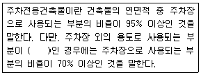
- 단독주택
- 종교시설
- 교육연구시설
- 문화 및 집회시설
(정답률: 53%)
99. 국토의 계획 및 이용에 관한 법률에 따른 주거지역의 건폐율 기준으로 옳은 것은?
- 20퍼센트 이하
- 40퍼센트 이하
- 70퍼센트 이하
- 90퍼센트 이하
(정답률: 70%)
100. 제2종 일반주거지역안에서 건축할 수 있는 건축물에 속하지 않는 것은?
- 공동주택 중 아파트
- 교육연구시설 중 대학교
- 자동차관련시설 중 주차장
- 제1종 근린생활시설로서 당해 용도에 쓰이는 바닥면적의 합계가 1000m2 미만인 것
(정답률: 51%)
건축법 시행규칙 제 28조에 따르면, 연면적 200m2을 초과하는 공동주택의 복도의 유효너비는 1.8m 이상으로 규정되어 있습니다. 이는 대피 및 이동에 충분한 공간을 확보하기 위한 것입니다.
따라서, 이 문제에서 정답은 "1.8m"입니다.